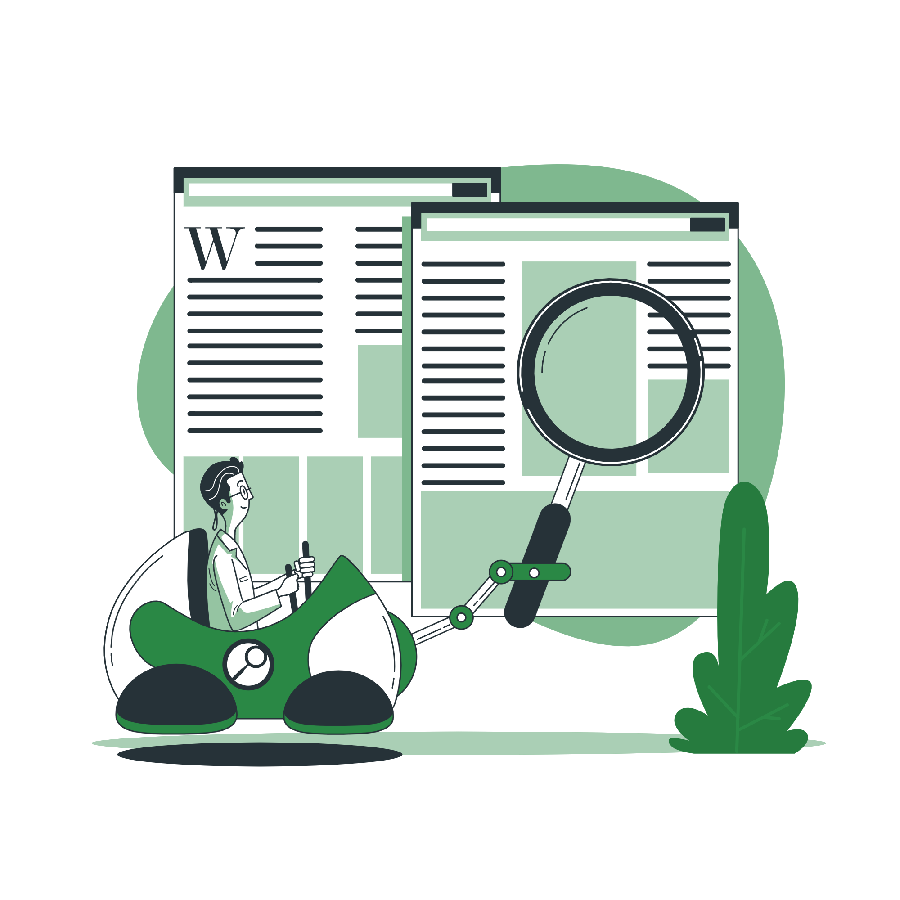

Dimana Kita Dapat Menemukan Update Untuk Berita Tentang Jurusan Teknik Komputer?

Untuk update berita terbaru dari Jurusan Teknik Komputer Unand mulai dari Akademik, Laboratorium, Tracer Study, Dokumen terkait, berita tentang delegasi mahasiswa untuk ikut dalam ajang internasional seperti Asia Youth International Model Nations, lomba robotik, coding dan lain-lain bisa cek di link atau Button di bawah ini ya teman-teman.